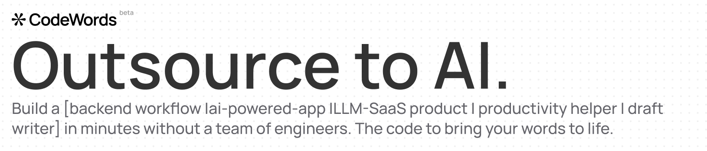

Agemo, nine spines
Product design
The journey model is the page. Its four states of mind run left to right, the middle one is missing, and the real screens arrive to fill it.
| 1 | It starts with a look. “What does this do?” | The first state of mind from the journey model, alone on the screen. |
|---|---|---|
| 2 | Then, straight away, an empty box. | The last state, far to the right. Between them, nothing: “Today journey largely skips over middle, goes from ‘learn capabilities’ to ‘create’” |
| 3 | So we built the middle. “Can I try this for a something simple ...” | A tool somebody else made slides into the gap, ready to run. |
| 4 | “Can I trust this to be consistent for...” | That tool's own page: how fast it was built, how often it has run. |
| 5 | “How can this fit into my workflow for ...” | The empty box again. This time the person knows what to put in it. |
We map the change of mind first, then give each stage its place in the product.


One tool's page, never simplified. Each beat lights one more of its real buttons, so the same page gets deeper while nothing is added or removed.
| 1 | The team wanted engineers. The people arriving were not. | The four kinds of builder, lined up by how much they know: “Tool consumer”, “Tool remixer”, “Tool Builder”, “Tool Chainer” |
|---|---|---|
| 2 | Make it simple, and the engineers leave. “Favor enabling power users over simplifying for casual users.” | One tool's page, whole and dense, everything dimmed. |
| 3 | So nothing came out. It was put in order. First: run it. | Only the Run button is lit. The consumer stops here, and that is fine. |
| 4 | Then read how it works, and change it. | Use spec lights. It opens the conversation with this tool's spec already filled in. The remixer and the builder go this far. |
| 5 | Then take it with you. | Get API and Get code light last. The whole page is on, and it is the page from beat two. |
We keep the depth, and build the way up to it.

The same front page three times: visit one, visit two, visit ten. The page does not change. What the person reaches for does.
| 1 | Visit one. You run a tool somebody else made. It works. | The front page; a hand goes to one of the ready-made tools. A small counter reads 1. |
|---|---|---|
| 2 | You leave. That was the plan. | The page empties. The bet, in its own words: “which will require more than one visit” |
| 3 | Visit two. You come back with a problem of your own. | Same page, counter at 2. The hand goes to Remix on the tool that was closest. |
| 4 | You change it until it fits. | The conversation opens with that tool's description already written in. |
| 5 | Visit ten. You start from the empty box. | Same page, counter at 10. The hand goes to the box it ignored the first time. |
We design the first ten minutes to earn the next visit, not to close the sale.


Product strategy
The old flow drawn as one line, starting at an empty box. Everything we built appears to the left of where that line began.
| 1 | The ask: “Cleaning up onboarding”. Six weeks. No redesign. | The scope of work, as it was written. |
|---|---|---|
| 2 | We walked the product. It began at an empty box. | The old flow, one line: write a prompt, build, run. Nothing before the first step. |
| 3 | “If you weren’t here to walk me through it, I would have dropped off already.” | The line holds. A person stands to its left with no way onto it. |
| 4 | The trouble sat before the first screen. Nobody knew what to ask for. | The blank space left of the line, held. |
| 5 | So the way in became product: something to try, something to change, someone to ask. | Three real screens arrive in that space, in order, and join the line. |
We answer the brief by finding the problem underneath it.


The two flows as two lines down the screen, one for the builder and one for the looker. Each decision moves one line in front, until they meet.
| 1 | Two people arrive. One has a job to do. One is curious. | Two lines begin side by side: the create flow and the explore flow. |
|---|---|---|
| 2 | Every page can only lead with one of them. “is this intent and curiosity? how are we grabbing intent” | The lines cross a page and tangle. |
| 3 | We chose. “Intent > Curiosity” | The builder's line moves in front. The bet, as written. |
| 4 | Then held to it. On a tool's page: “‘similar’ before ‘other’ because ‘Intent’ before ‘curiosity’” | The same choice, small, on a real page: similar tools above the maker's other tools. |
| 5 | The curious are not turned away. They are given a way to become builders. | The looker's line runs through a tool, through Remix, and joins the builder's. |
We choose who comes first, and then hold to it on every page.


Subtraction. A wireframe crowded with everything that was proposed; each beat one thing is lifted off, with the note that removed it, until one box is left.
| 1 | Everything on the table at once. | The crowded round: search, categories, free runs, a place to browse. |
|---|---|---|
| 2 | Search? “there is no point in replacing create with a far lower quality action” | The search bar lifts off. The note stays where it was. |
| 3 | Free runs? “no point in getting a person to “run” if they dont want to commit” | The free Run goes. |
| 4 | A home for the merely curious? “at the moment we dont need to design for that” | The browsing page goes. |
| 5 | What is left is the one act that matters. | One box, and the tools beside it: the real front page. |
We keep the product about one act, and say no to the rest out loud.


Storytelling
The headline slot of the real front page, and nothing else. Each candidate sits in it at full size, then the note that killed it, then the next.
| 1 | “AI-tools. For every Job.” | Set where the headline goes. Then the note: “these arent AI tools though. They are tools made with AI.” |
|---|---|---|
| 2 | “There’s a tool for that.” | Replaces it. Then the note: “EWverything might not preexist” |
| 3 | “Generated tools.” | Holds, alone, for two rounds of wireframes. |
| 4 | “Generated Code.” “AI for Software.” | Quick ones, each a little wrong, each gone. |
| 5 | “Outsource to AI.” | It stays. The rest of the real front page fades in around it, with the line under it: “The code to bring your words to life.” |
We write the headline as a design problem, until the product fits inside it.



A search bar. The page starts as the habit itself, a search and a row of one-off tools, and those tools turn into the cards on the front page.
| 1 | You need two PDFs merged. You search. | A search bar, and under it the one-off tools from the first bet's slide. |
|---|---|---|
| 2 | You pick the first result. It works. You close the tab. | One tool opens, does its job, and is gone. |
| 3 | That is who we were up against. “one google search away” | The tab closes again and again, a different tool each time. |
| 4 | So this is not sold as something new. “a new way of completing an existing behavior to users, not a new behavior” | The scattered tools slide into one grid: the real front page. |
| 5 | And the next job is already there. | The hand that came for one tool moves to the one beside it. That was the test. |
We design against what people already do, not against an empty space.


One newcomer's walk through the old product, told only in the notes the team wrote. The flow is the stage, and each step speaks one note.
| 1 | Home. “I don’t really know what types of thing I can build with CodeWords” | The old flow's first box, with one note beside it. |
|---|---|---|
| 2 | A prompt. “what are integrations?” | The line moves one step. The next note. |
| 3 | A build. “Do I just sit and wait?” | The line stops here for a while. |
| 4 | A run. “What is this page for?” | The last step. |
| 5 | The team wrote every one of these. | Pull back: the whole flow, covered in their notes. |
We get the team to find the problem themselves, so the fix is theirs too.